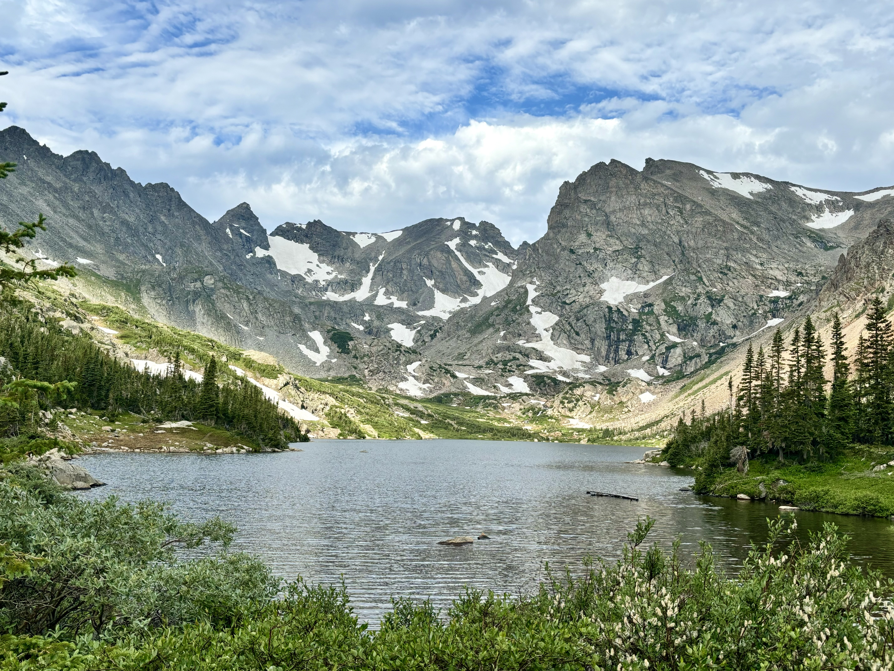

Warming stripes of aviation: Contributions to global warming 1980-2021.
Credit: https://www.eurekalert.org/news-releases/933729. Retrieved: September 24, 2026.
First documented in 1166 as a woodland clearing, the southern Munich district of Forstenried grew around the late-Gothic Heiligkreuz church, anchoring the settlement within Bavaria's monastic network. In this region, monastic estates and forestries collaborated on agricultural and weather tracking. Monastic scholars were instrumental in early meteorology. Forstenried is tangentially related to monastic weather research through the assignment of the Polling Abbey canon and astronomer Prosper Goldhofer to the local parish in 1765. Today, Forstenried lies halfway between two centers for weather and cloud research: the Institute of Atmospheric Physics at DLR in Oberpfaffenhofen near Wessling and the Meteorological Institute at LMU Munich close to the city center.
The FoCP has been researching clouds since its inception in 2026, complementing research of Bernd Kärcher (CV, Bio) by providing non-financial support through the organisation of scientific cooperation and the provision of technical infrastructure.
The following research studies were facilitated by the FoCP:
Catalyzing the new field of Earth System science, Johan Rockström presented in 2009 clear evidence underscoring the urgency of preventing human activities from causing unacceptable environmental and climatic change. Early warning signs were provided by the Club of Rome as early as 1972 in their landmark study The Limits to Growth and by individuals such as Hoimar von Ditfurth in the popular German TV science show Querschnitt in 1978 and Carl Sagan in his U.S. congressional testimony in 1985.
That global aviation significantly contributes to climate change was scientifically established and politically recognized over the course of the 1990s. Intense international scientific research efforts culiminated 1999 in the widely accepted Special Report by the Intergovernmental Panel on Climate Change. Since then, the scientific community has intensively investigated the climate effects of both aviation carbon dioxide (CO2) emissions and aircraft-induced cloudiness. Reducing aviation CO2 emissions and contrail cloudiness reduces the global warming contribution due to air traffic.
While carbon dioxide emitted into the atmosphere remains active over centuries, atmospheric effects of clouds are transient. Two options to mitigate the contrail impact have come under scrutiny: fuel composition changes and operational contrail avoidance. Some contend that the implementing the latter option immediately is critical for safeguarding the future climate, others suggest that reducing contrails by tactically rerouting aircraft could counterproductively hinder climate change mitigation. A commentary published by the Global Catastrophic Risk Institute highlights the current lack of consensus among scientists on whether actively avoiding contrails yields a net climate benefit.
To prevent increasing human suffering and loss of biodiversity beyond 2100 requires reaching and sustaining net zero anthropogenic CO2 emissions—including those from air traffic—as soon as possible in order to meet the 2oC guard-rail temperature target. Much of this increase in global mean surface temperature has already occurred, so every tenth of a degree of less warming matters. Contrail cloudiness dominates current aviation warming, yet underlying predictions carry large uncertainties.
On average, more than 100,000 flights depart from airports daily. In the year 2018, aviation's contribution to human-induced global warming was 4% and it may well increase further over the next decades. However, with a moderate reduction of air traffic emissions of 2.5% per year—less than required by most other economic sectors to meet their climate targets—aviation's contribution to global warming is projected to reach a constant level in 2050. Meeting aviation climate targets requires major technological and lifestyle shifts. Managing this transition effectively relies on a sound understanding of atmospheric processes and robust climate predictions.

Contact
Forstenried Laboratory for Cloud Physics